Next: First order flow correction
Up: Spherical enclosures
Previous: Creeping flow
Contents
From (8.17), (8.27) and (8.45),
| 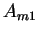 |
 |
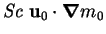 |
|
| |
 |
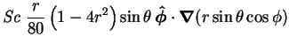 |
|
| |
|
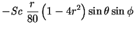 |
|
| |
|
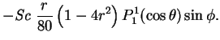 |
(8.48) |
The solution for (8.14) for 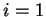 is then:
Similarly,
Noting that
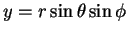, and
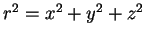, it can be seen that
 depends on the Cartesian coordinates only as
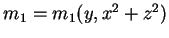, so
that it is axisymmetric about the
depends on the Cartesian coordinates only as
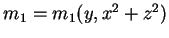, so
that it is axisymmetric about the  -axis.
Its contours in any plane passing through the -axis are plotted in
figure 8.5;
-axis.
Its contours in any plane passing through the -axis are plotted in
figure 8.5;
Figure 8.5:
First order vapour mass fraction (8.49)
or temperature (8.50) in any plane passing
through the -axis. and  are nonnegative for 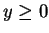.
Contour levels at 0.01, 0.1(0.1)0.4, 0.6(0.1)0.9, 0.99 of range.
are nonnegative for 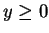.
Contour levels at 0.01, 0.1(0.1)0.4, 0.6(0.1)0.9, 0.99 of range.
 |
it is nonnegative in the upper hemisphere,
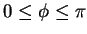.
The vapour mass fraction field to first order,
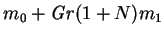, is contoured
for various values of
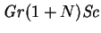 in figure 8.6.
Figure 8.6:
Vapour mass fraction in the plane  to first order,
, for
of
(a) 500, (b) 1000, (c) 2000,
(d) 5000, (e) 10000, (f) 13000.
Contours at
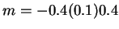.
to first order,
, for
of
(a) 500, (b) 1000, (c) 2000,
(d) 5000, (e) 10000, (f) 13000.
Contours at
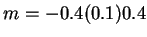.
![\begin{figure}\centering\begin{picture}(131,180)(0,0)
\put(0,130){\makebox(0,0)[...
...xtit{e})}}
\put(131,0){\makebox(0,0)[r]{(\textit{f})}}
\end{picture}\end{figure}](img1143.png) |
The contours could also be interpreted as the temperature,
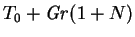,
for the corresponding value of
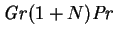. By
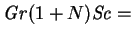13000, the
mass fraction field has begun to exhibit internal extrema, which is
impossible for the full solution,  ,
by Theorem 1. Since
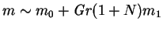, the plots should
be increasingly accurate for the lower values of
,
by Theorem 1. Since
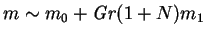, the plots should
be increasingly accurate for the lower values of
 ; comparison
with higher order approximations or full solutions would be required to
quantify this. Some of the qualitative features of convection in plane
vertical cavities, for example as seen in figure 5.8,
are evident in figure 8.6, even at this low order:
the stretching of the level curves at the departure `corners', meaning the
quadrants
; comparison
with higher order approximations or full solutions would be required to
quantify this. Some of the qualitative features of convection in plane
vertical cavities, for example as seen in figure 5.8,
are evident in figure 8.6, even at this low order:
the stretching of the level curves at the departure `corners', meaning the
quadrants  ; steepening of
the horizontal gradients at the starting `corners', 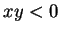;
and the beginnings of a stable vertical stratification in the core.
; steepening of
the horizontal gradients at the starting `corners', 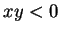;
and the beginnings of a stable vertical stratification in the core.
In comparing the present results with those for vertical plane rectangular
cavities (ch. 5),
it may be seen that the `destruction of the conduction-diffusion regime
by a gradual penetration of convective effects into the core'
(p. ![[*]](file:/usr/local/lib/latex2html/icons/crossref.png) ) occurs at any finite value of
or
in the sphere. This is because the `end-zones' of the spherical
enclosure are simply the upper and lower hemispheres: nowhere is `sufficiently
far from the floor or ceiling' (p. ).
) occurs at any finite value of
or
in the sphere. This is because the `end-zones' of the spherical
enclosure are simply the upper and lower hemispheres: nowhere is `sufficiently
far from the floor or ceiling' (p. ).
The behaviour outside the plane can easily be visualized by noting
that to first order,
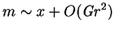 in the plane 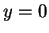, while in the plane
 , 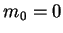, so that
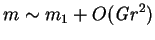, which is pictured in
figure 8.5.
, 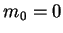, so that
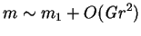, which is pictured in
figure 8.5.
Next: First order flow correction
Up: Spherical enclosures
Previous: Creeping flow
Contents
Geordie McBain
2001-01-27